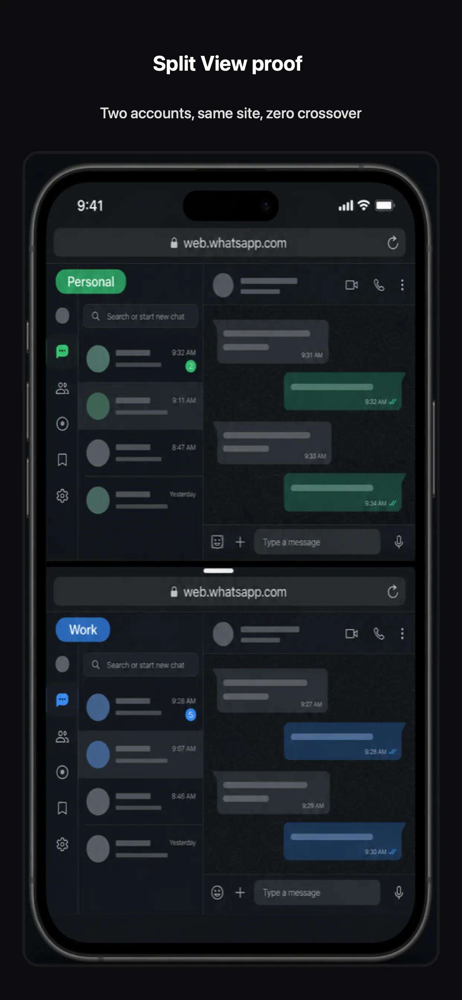
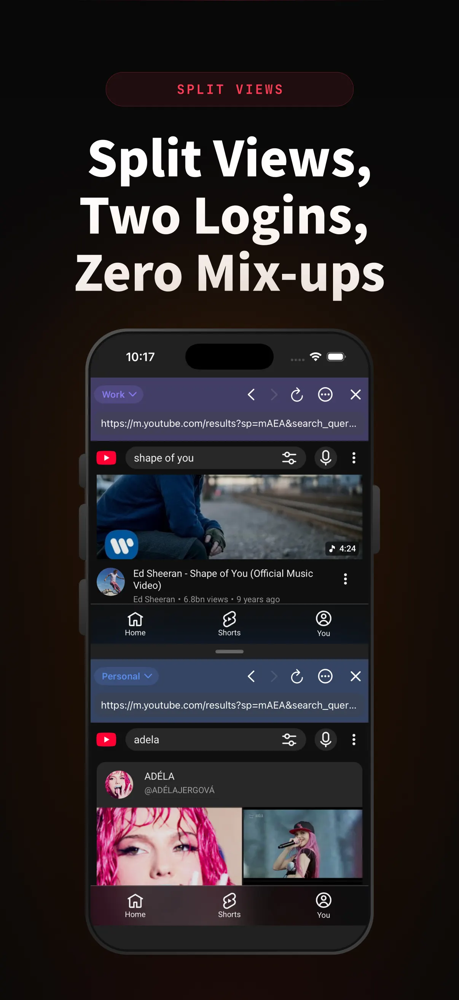

In the app
Open two panes on one screen. Each pane can use a different Space—compare logins, chat in two accounts, or research without switching away.

Also in XBrowser · Multitask
Open two panes on one screen. Each pane can use a different Space—compare logins, chat in two accounts, or research without switching away.
Open two panes on one screen. Each pane can use a different Space—compare logins, chat in two accounts, or research without switching away.

Bind each pane to Work or Personal (or any Space). Cookies stay isolated while you see both sessions at once.

Dual messengers, dual shop dashboards, or YouTube accounts side by side—Split View sits on top of zero-trust Spaces.

XBrowser’s core is zero-trust Spaces. Screenshot, editor, Watch Later, and Split View sit on top of that isolation.
Download on the App Store